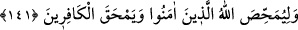

Hazretleri belâyı bazen mü’minlere musallat eder; bazen de kâfirlere. Ayrıca şu da
olabilir; bir mü’min bazen günaha yönelir, dünyada belâya dûçâr edilmesi, onu eğitmek
için olabilir. Kâfirin belâya dûçâr edilmesi ise sadece, Allah Teâlâ’nın ona gadab
etmesinden kaynaklanır.
“Tâ ki Allah, îman edenleri ortaya çıkarsın, sizden şahidler edinsin” Bu cümle,
mahzûf bir illete mâtuftur. Şu şu menfaatler sizin olsun diye bu ikbâl günlerini gâh size,
gâh onlara gösteriyoruz, demektir.
Cümlenin, mahzûf bir illete atfedilmesinin sebebi, Allah’ın davranışlarının tek bir
illeti olamayacağını ve mü’minlere, bilmedikleri daha başka kazançların da isâbet
ettiğini göstermektir.
“Allah ortaya çıkarsın” diye ifade ettiğimiz cümle sözlük açısından “Allah bilsin”
anlamına gelir; “Allah’ın bilmesi” kavramı, ya temsîlîdir ve: “Allah, îman üzere sebât
edip hâlis davrananları diğerlerinden ayırdetmek isteyen biri gibi davranmak için...”
demektir, ya da Allah’ın bilmesi, sebebi zikredip sebepten kaynaklanan şeyi
(müsebbibi) kasdetme yolu ile mecâzen “ayırmak” anlamında kullanılmıştır. Yani:
“Îmân üzere sebât edenleri diğerlerinden ayırmak için...” demektir.
Üçüncü olarak Allah’ın bilmesi, bilinen şeye, bilfiil ortaya çıkması itibariyle taalluk
ettiği için hakiki mânada “bilmek” de olabilir. Çünkü o bilgi cezanın kendisine bağlı
olarak döndüğü mihverdir. Bilkuvve mevcûdiyetinden değil. Buna göre âyetin bu
bölümünün mânası şöyle olur: “Allah, ceza terettüb edecek tarzda bilmek için, bu
günleri aranızda çevirir, durur.”
Bir görüşe göre: Âyetteki “şühedâ” kelimesi “şehid”in çoğuludur. Âyet: “bir
kısmınıza şehâdet mertebesi ihsân etmek için...” demektir. Bu şehidler de Uhud savaşı
şehidleridir.
“Allah zâlimleri sevmez.” Zâlimleri sevmemek, onlara buğzetmekten kinâyedir.
Allah, açıkça yaptıkları şeyin tam tersi düşünce ve inançlara sahip olanlara, yahut
kâfirlere buğzeder, demektir. Bu cümle, îtirâziyyedir.
Bu ifadede, Allah Teâlâ’nın kâfirlere yardım etmeyeceğine, kâfirleri bazen galip
getirmesinin ise sadece mü’minleri denemek ve kâfirleri fecî sonlarına yavaş yavaş
yaklaştırmak (istidrâc) maksadına mâtuf olduğuna dikkat çekilmektedir.
141. Bir de (böylece) Allah, îman edenleri günahlardan temize çıkarmak, kâfirleri
de helâk etmek ister.
“Ve inananları iyice arındırmak”, bu cümle “güç ve zafer aleyhlerine olduğu zaman,
inananları günahlardan temizleyip arındırmak için...” demektir.
“Kâfirleri de mahvetmek için” güç ve zafer aleyhlerine olduğu zaman kâfirleri de